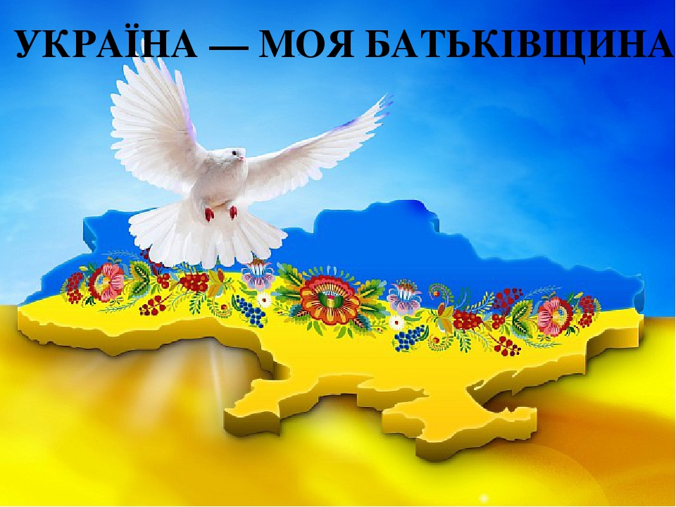
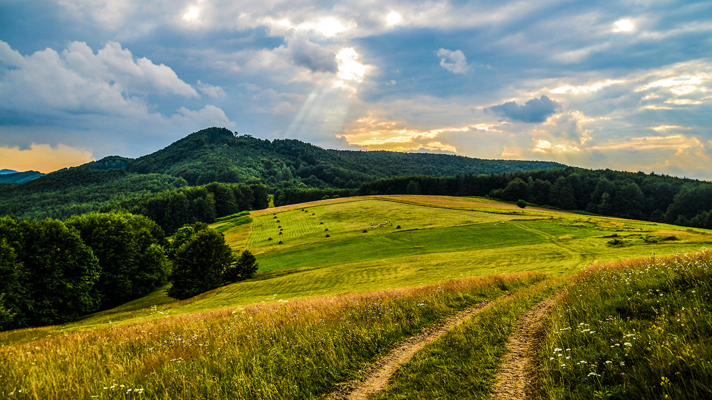
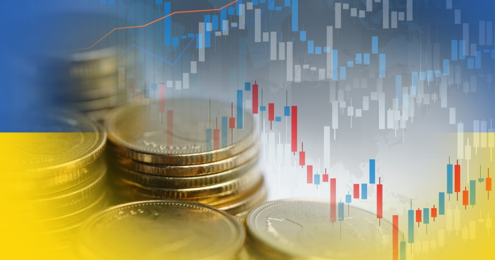
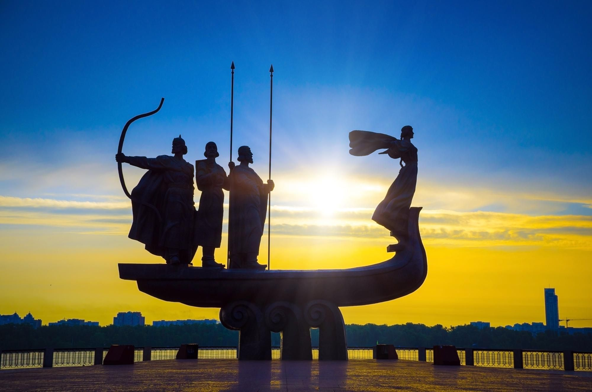

Україна – країна свободи, культури та неймовірної природи
Україна — це держава в Східній Європі, яка славиться своєю історією, природними багатствами та незламним народом.
Вона має давнє коріння, багату культуру та стратегічне розташування, що робить її важливим центром на карті Європи.
Навігація
Загальні відомості
- Столиця: Київ
- Офіційна мова: Українська
- Населення: Близько 40 мільйонів осіб
- Територія: 603 548 км²
- Грошова одиниця: Гривня (UAH)
- Національні символи: Тризуб, прапор (синьо-жовтий), гімн «Ще не вмерла України…»
Історія та культура
Україна має багату історію, що охоплює тисячоліття. Вона була центром Київської Русі, пережила козацьку добу, боротьбу за незалежність та сучасні виклики.

Визначні історичні події:
- Київська Русь (IX–XIII ст.) – могутня держава, предтеча сучасної України.
- Козацька доба (XVI–XVIII ст.) – Запорозька Січ і боротьба за волю.
- Проголошення незалежності (1991 р.) – відновлення суверенітету після розпаду СРСР.
- Революція Гідності (2013–2014 рр.) – боротьба за європейський шлях розвитку.
Культурна спадщина:
- Література – Тарас Шевченко, Іван Франко, Ліна Костенко.
- Архітектура – Софійський собор у Києві, Львівська площа Ринок, Хотинська фортеця.
- Музика – народні пісні, «Щедрик» Миколи Леонтовича, сучасна українська естрада.
- Традиції – святкування Івана Купала, Різдво з колядками, Великдень із писанками.
Природа та клімат
Україна має унікальну природу, яка вражає своєю різноманітністю:
- Карпати – мальовничі гори з лісами, водоспадами та традиціями гуцулів.
- Чорне море – теплі узбережжя та курорти.
- Подільські Товтри – природне диво, яке нагадує кораловий риф.
- Асканія-Нова – заповідник зі степовими краєвидами та рідкісними тваринами.
- Шацькі озера – унікальна система чистих озер на заході країни.
Клімат в Україні помірно-континентальний, із теплим літом та прохолодною зимою.
На початокЕкономіка
Україна багата природними ресурсами та має потужний аграрний сектор.
Основні галузі економіки:
- Сільське господарство – один із найбільших експортерів зерна у світі.
- Металургія – виробництво сталі, заліза, алюмінію.
- IT-сектор – стрімко зростаюча галузь із кваліфікованими фахівцями.
- Енергетика – великі поклади газу, нафти, вугілля та розвиток зеленої енергетики.
Українці – народ незламності
Головна сила України — її люди. Українці відзначаються:
- Гостинністю – завжди раді допомогти та прийняти гостей.
- Працьовитістю – досягають успіху у багатьох сферах.
- Патріотизмом – шанують свою країну та борються за її майбутнє.
Україна — це країна свободи, культури та безмежних можливостей. Вона змінюється, розвивається й впевнено рухається вперед!
На початок-
1 рівень вкладеності
- 2 рівень вкладеності
-
2 рівень вкладеності
- 3 рівень вкладеності
- 3 рівень вкладеності
- 3 рівень вкладеності
- 2 рівень вкладеності
- 1 рівень вкладеності
- 1 рівень вкладеності
- 1 рівень вкладеності